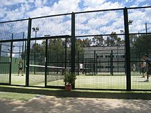

| El pádel un deporte de palas con origen en México. Se juega en parejas y consta de tres elementos fundamentales para su desarrollo: la pelota, la pala y el campo de juego o pista. Consiste en hacer botar la bola en el campo contrario, con la posibilidad de rebotar en las paredes. |
 |
 |
El Campeonato del mundo de pádel es una competición internacional de pádel que se disputa cada dos años desde 1992, |
 |
-Los mejores jugadores ahora mismo en la escena del Padel de la modalidad maculina son:
|
-En la modalidad femenina se encuentra:
|